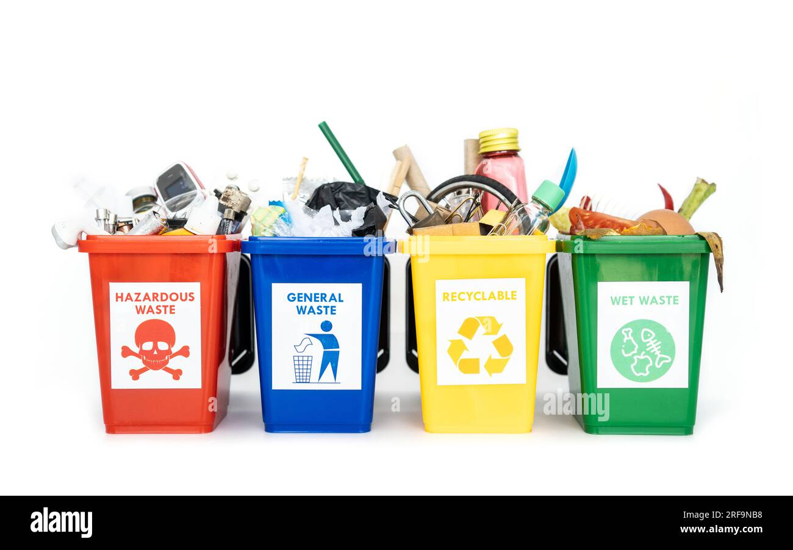

Projects
TerraYield – Crop Yield Prediction (Omdena)
Collaborative project predicting crop yield in the US Corn Belt from Sentinel-2 satellite imagery. My part: data collection and cleaning (Part 1). This included a temporal leakage validator for the imagery, DVC pipeline integration, and schema validation.
Python Sentinel-2 DVC Data Validation
Code →
Multi-Language AI Agent
Multi-agent assistant that detects the user's language and routes the conversation to a specialised language agent.
Agno LLM Agents Streamlit
Live Demo → Code →
URL Summarizer & Q&A (RAG)
Retrieval-augmented tool that ingests multiple web pages, summarises them, and answers questions grounded in their content.
RAG ChromaDB LLM Streamlit
Live Demo → Code →
Garbage Classification with ResNet
Image classifier that sorts waste into categories using transfer learning on ResNet, reaching 94% accuracy on the test set.
PyTorch ResNet Computer Vision
Live Demo → Code →